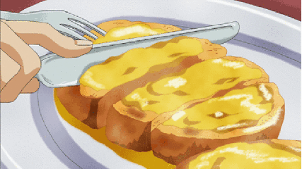
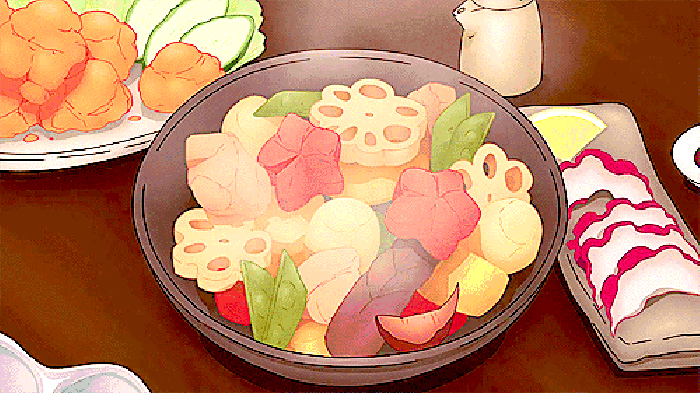
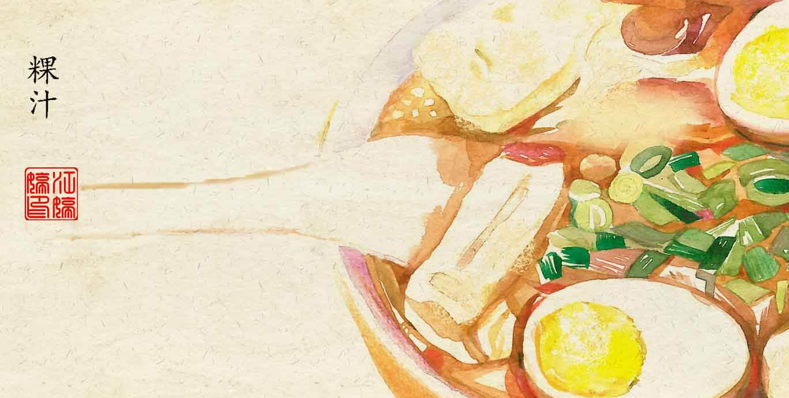
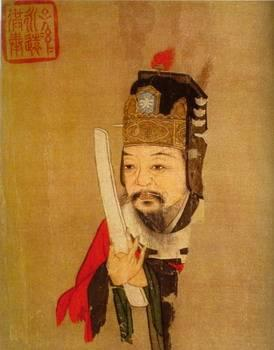

传说中的中国烹饪始祖
关于饮食文化的起源，目前说法不一。有人依据黄帝制造釜甑、教民建灶蒸谷的传说，认为他是烹饪的始祖； 有人认为燧人氏“钻木取火，以化腥臊”，是他揭开了烹饪史的第一页；还有人认为伏羲氏“结网罟，以教佃渔”，应为中国烹饪的始祖。
有巢氏
当时人们不懂人工取火和熟食。饮食状况是茹毛饮血，不属于饮食文化。
燧人氏
钻木取火，从此熟食，进入石烹时代。
主要烹调方法：1、炮，即钻火使果肉而燔之；2、煲：用泥裹后烧；3、用石臼盛水、食，用烧红的石子烫熟食物；4、焙炒：把石片烧热，再把植物种子放在上面炒。
伏羲氏
在饮食上，结网罟以教佃渔，养牺牲以充庖厨。
神农氏
“耕而陶”，是中国农业的开创者，神农尝百草，开创古医药学，发明耒耜，教民稼穑。陶具使人们第一次拥有了炊具和容器，为制作发酵性食品提供了可能，如酒、醢、醯（醋）、酪、酢、醴等。鼎是最早的炊具之一，有爪儿因为当时没灶，还有鬲，其爪是空心的，鬶用来煮酒的。
黄帝
中华民族的饮食状况又有了改善，黄帝作灶，始为灶神，集中火力节省燃料，使食物速熟，而广泛使用在秦汉时期，当时是釜，高脚灶具逐步退出历史舞台，“蒸谷为饮，烹谷为粥”首次因烹调方法区别食品，蒸锅发明了，叫甑。蒸盐业是黄帝臣子宿沙氏发明，从此不仅懂得了烹还懂得调，有益人的健康。
有历史记载的厨师“始祖”

被公认的、又有历史记载的中国“厨神”是：彭祖、伊尹、易牙。他们或有烹饪理论流传后世，或有高超烹饪技艺载入史册，在中国烹饪开创时期占有重要地位，成为厨师的始祖。
“烹饪鼻祖”彭祖
彭祖，姓钱名铿，是黄帝的第八代孙。彭祖为长寿之神，相传他曾隐居武夷山幔亭峰下，茹芝饮瀑，遁迹养生，寿至百年。其有二子，一名彭武，二名彭夷，来此山定居，故此山便命名为武夷山。他们给武夷山留下许多宝贵的保健餐饮与美食养生的财富。
彭祖因善调制味道鲜美雉羹，治好尧帝厌食症，而受封于大彭(今江苏省徐州市)。屈原在《楚辞·天问》中写道：“彭铿斟雉，帝何飨？受寿永多，夫何久长？”汉代楚辞专家王逸注曰：“彭铿，彭祖也。好和滋味，善斟雉羹，能事帝尧，帝尧美而飨食之也。”宋代洪兴祖补注曰：“彭祖姓钱名铿，帝颛顼玄孙，善养气，能调鼎，进雉羹于尧，封于彭城”。
彭铿是彭部族的始祖，以后子孙繁衍，主要是他的“雉羹之道”可祖，便尊称他为彭祖，他的后裔就叫彭祖氏。彭祖由“雉羹之道”逐步发展成为“烹饪之道”，雉羹是我国典籍中记载最早的名馔，被誉为“天下第一羹”。中国烹饪史略中称彭祖“是我国第一位著名的职业厨师”，而且是“寿命最长的厨师”，至今被尊为厨行的祖师爷。
雉羹，就是野鸡汤，即用野鸡加稷米(后来改为薏米)同炖而成，有鲜香醇厚、易消化等特色。传说，乾隆皇帝南巡路过徐州，品尝野鸡汤，感觉味道鲜美无比，因而赐名“天下第一羹”。
除了雉羹之外，“糜角鸡”也属彭祖食疗菜之一，这是采用糜鹿头上的角，与母鸡同炖而成，风味独特。彭祖的另一食疗养生菜是“云母羹”。云母是云母族矿物的总称，工业用途极广，但彭祖选用云母作为食养原料，可谓别具一格，这说明彭祖对食物的食性有一定的经验。
“烹调之圣”“烹饪始祖”伊尹

伊尹（公元前1649年—公元前1549年），伊姓，名挚，小名阿衡，“尹”不是名字，而是“右相”的意思。夏朝末年生于空桑（一说今河南杞县，一说今河南伊川县，一说山东曹县，一说陕西合阳），因其母居伊水之上，故以伊为氏。伊尹为中国商朝初年著名贤相丞相、政治家、思想家，已知最早的道家人物之一。他也是中华厨祖，中原菜系创始人。
伊尹由厨入宰的经历，从史料记述中可知，伊尹先是当过奴隶的，幼年的时候寄养于庖人之家，得以学习烹饪之术，长大以后成为精通烹饪的大师。并由烹饪而通治国之道，说汤以至味，成为商汤心目中的智者贤者，被任用为相，影响较大。
约公元前16世纪初，伊尹辅助商汤灭夏朝，为商朝的建立立下汗马功劳。“以鼎调羹”“调和五味”的理论来治理天下，就是老子所说的“治大国若烹小鲜”。他任丞相期间，整顿吏治，洞察民情，使商朝初年经济比较繁荣，政治比较清明，商朝国力迅速强盛。
伊尹历事商朝商汤、外丙、仲壬、太甲、沃丁五代君主五十余年，为商朝强盛立下汗马功劳。沃丁八年，伊尹逝世，终年100岁。沃丁以天子之礼将伊尹安葬于都城亳（今河南商丘谷熟镇西南）附近，以表彰他对商朝做出的伟大贡献。伊尹被后人奉祀为“商元圣”。
伊尹是历史上第一个以负鼎俎调五味而佐天子治理国家的杰出庖人。他创立的“五味调和说”与“火候论”，至今仍是中国烹饪的不变之规。他“教民五味调和，创中华割烹之术，开后世饮食之河”，在中国烹饪文化史上占有重要地位，被中国烹饪界尊为“烹调之圣”、“烹饪始祖”和“厨圣”。
以伊尹来比喻技艺高超的厨师的词语也不少。“伊尹煎熬”（枚乘《七发》），“伊公调和”（梁昭明太子《七契》），“伊尹负鼎”（《史记》），“伊尹善割烹”（《汉书》）等。《鹖冠子·世兵篇》还有“伊尹酒保”的记载，表明伊尹曾在餐馆干过。
此外，伊尹还对中医学有研究。在中医学上，古有“伊尹制汤液而始有方剂”，这是因为当时使用的药为单味药，伊尹试着把功能相同或相近的药物放在一起煎煮，由此诞生了中药复方，即方剂。可以说，“伊尹汤液”在某种程度上，将中医学带到了一个新的领域。
中国饮食文化的发展
周秦时期

中国饮食文化的成形时期，以谷物蔬菜为主食。春秋战国时期，自产的谷物菜疏基本都有了，但结构与现在不同，当时早田作业主要是：稷，是小米，又称谷子，长时期占主导地位，为五谷之长，好的稷叫梁之精品又叫黄梁。黍，是大黄粘米仅次于稷，又称粟，是脱粒的黍。麦，大麦。菽，是豆类，当时主要是黄豆，黑豆。麻，即麻子。菽和麻都是百姓穷人吃的，麻又叫苴。南方还有稻，古代稻是糯米，普通稻叫粳秫，周以后中原才开始引种稻子，属细粮，较珍贵。菰米， 是一种水生植物茭白的种子，黑色，叫雕胡饭，特别香滑，和碎瓷片一起放在皮袋里揉来脱粒。
汉代

中国饮食文化的丰富时期，归功于汉代中西（西域）饮食文化的交流，引进石榴、芝麻、葡萄、胡桃（即核桃）、西瓜、甜瓜、黄瓜、菠菜、胡萝卜、茴香、芹菜、胡豆、扁豆、苜蓿（主要用于马粮），莴笋、大葱、大蒜，还传入一些烹调方法，如炸油饼，胡饼即芝麻烧饼也叫炉桡。
淮南王刘安发明豆腐，使豆类的营养得到消化，物美价廉，可做出许多种菜肴，1960年河南密县发现的汉墓中的大画像石上就有豆腐作坊的石刻。
东汉还发明了植物油。在此以前都用动物油，叫脂膏，带角的动物油叫脂，无角的如犬，叫膏。脂较硬，膏较稀软，植物油有杏仁油，奈实油，麻油，但很稀少，南北朝以后植物油的品种增加，价格也便宜。
唐宋

饮食文化的高峰，过分讲究。“素蒸声音部、罔川图小样”，最具代表性的是烧尾宴。
烧尾宴是唐代长安曾经盛行过的一种特殊宴会。所谓“烧尾宴”，是指士人新官上任或官员升迁，招待前来恭贺的亲朋同僚的宴会。这一看来奇怪的名称，来源有三种说法：一说老虎变成人时，要烧断其尾；二说羊入新群，要烧焦旧尾才被接纳；三说鲤鱼跃龙门，经天火烧掉鱼尾，才能化为真龙。五代时陶谷的《清异录》一书，记载了唐代最著名的一次烧尾宴。明清

饮食文化是又一高峰，是唐宋食俗的继续和发展，同时又混入满蒙的特点，饮食结构有了很大变化，主食：菰米已被彻底淘汰，麻子退出主食行列改用榨油，豆料也不再作主食，成为菜肴，北方黄河流域小麦的比例大辐度增加，面成为宋以后北方的主食，明代又一次大规模引进，马铃薯，甘薯，蔬菜的种植达到较高水准，成为主要菜肴。肉类：人工畜养的畜禽成为肉食主要来源。
满汉全席代表了清代饮食文化的最高水平。